"Tracking the systematic gaps between text-query modifiers and visual embedding spaces."
Abstract
Every image in this project's corpus is something I made — a poster, a brand identity, an illustration, a sketch. That gave me an unusually direct way to test a semantic image search engine: instead of asking "did the model retrieve the objectively correct image," I could ask "does the model see my own work the way I do?" I built a SigLIP-based retrieval pipeline over 71 pieces from my design and illustration practice, wired it into a Gradio search interface, and then spent most of my time on the more interesting question underneath: not whether search worked, but where and why it quietly disagreed with me about what a query meant. That disagreement — documented here as a retrieval atlas — turned out to be the real deliverable.
Motivation & Corpus Statement
What it is. The corpus is 71 images pulled from my own practice as an illustrator and brand/graphic designer: portfolio case studies, poster and event graphics, packaging illustration, social media ad concepts, personal paintings, and a handful of phone screenshots documenting live work (an exhibition install, a pop-up event, app UI mockups).
Why this corpus. I didn't want to test the model against a dataset I had no stake in. Because I know the intent behind every single image — the brief, the reference, the color decision I fought with a client over — I can tell the difference between the model being "wrong" in a boring, technical sense and the model surfacing something genuinely revealing about how it reads design language versus how I read it. That's a much sharper test than checking retrieval against a public benchmark.
How I curated it. I pulled from three sources: my finished portfolio (branding, packaging, ad concepts — around half the set), personal illustration and painting work not made for a client, and a small set of in-the-wild documentation shots (exhibitions, pop-ups, app screens) to add some non-illustrated, "real-world" texture to the corpus. I deliberately did not curate for stylistic consistency — the mix of flat vector, painterly, photographic, and UI screenshots is intentional, because a corpus that's visually uniform wouldn't expose much about how SigLIP separates style from content.
Approach & Pipeline
The system maps both images and text into one shared embedding space, then ranks the corpus by closeness to a query:
Image Embedding Generation: All 71 images are passed once through SigLIP's vision tower, producing a fixed vector per image that's cached so the notebook never needs to re-embed the corpus on a fresh run.
Text Embedding Generation: A search query typed into Gradio is passed through SigLIP's text tower into the same embedding space as the images — no separate CLIP model, no re-alignment step.
Similarity Metrics: Retrieval uses raw cosine similarity between the query vector and every cached image vector. One real debugging finding shapes this section: my first version thresholded against SigLIP's logit-scaled scores (roughly 3–8) instead of the raw cosine similarities (which sit in a much tighter band, roughly −0.18 to 0.14 for this corpus). Once fixed, the Gradio gallery went blank at any threshold above ~0.1, because SigLIP's sigmoid-loss training produces cosine scores far lower than the 0–1 range CLIP-style intuition expects.
Interface Control: The Gradio interface exposes top-k and a similarity threshold slider (range −0.15 to 0.7, default near 0). Because the corpus is small, top-k does most of the practical filtering; the threshold is mainly useful for demonstrating how aggressively a stricter cutoff collapses results.
def retrieve(query_text, top_k=5, score_threshold=0.0):
inputs = processor(text=[query_text], return_tensors="pt", padding="max_length")
with torch.no_grad():
text_features = model.get_text_features(**inputs)
text_features = text_features / text_features.norm(dim=-1, keepdim=True)
# raw cosine similarity — NOT the logit-scaled score SigLIP returns by default
sims = (image_embeddings @ text_features.T).squeeze(1).cpu().tolist()
ranked = sorted(zip(image_paths, sims), key=lambda x: x[1], reverse=True)
filtered = [item for item in ranked if item[1] >= score_threshold]
return filtered[:top_k]
Embedding Space Mapping
The plot below is a 2D projection (UMAP, cosine metric) of the corpus's SigLIP embeddings, with the 13 atlas queries overlaid in the same space and connected by a line to their actual top-ranked matches. Teal points are portfolio images; pink points are text queries.
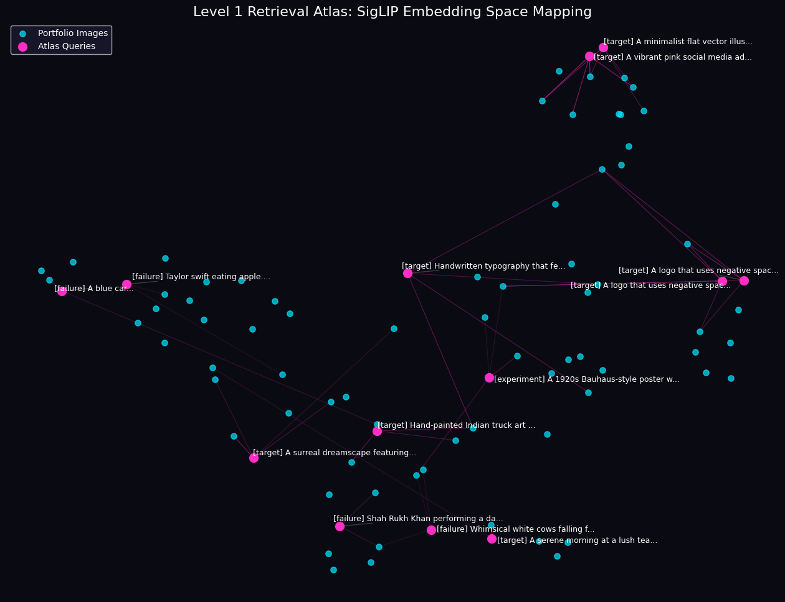
Figure 1: UMAP projection of corpus + atlas queries, edges drawn to each query's retrieved matches.
A few things are visible directly in the topology. The two "vibrant pink lipstick ad" and "minimalist lipstick" queries land almost on top of each other at the upper right, both pulling from the same tight cluster of beauty/cosmetics branding work — which is exactly the noun-dominance behavior described in Case 02 below: the model groups by subject before it separates by style. The two "negative space logo" queries (Cases 11 and 13, asked on different days) sit right next to each other on the far right and draw from the same small cluster of high-contrast brand marks, which is a nice visual confirmation that the failure is systematic rather than a one-off roll of the dice. Meanwhile "a blue car" and "Taylor Swift eating an apple" sit off on their own at the far left, isolated from any dense cluster — visually confirming that these queries have no real anchor in the corpus and are matching on weak, diffuse signal rather than any coherent concept.
The Retrieval Atlas (13 Case Studies)
Note: SigLIP's raw cosine similarities for this corpus range roughly from −0.18 to 0.14 (not the 0–1 range CLIP-style models produce). Threshold and similarity values below are taken directly from real notebook runs.
Case 01 Success Mode
"A vibrant pink social media advertisement for lipsticks featuring bold, high-contrast modern typography."
Top-k: 5Thresh: -0.03
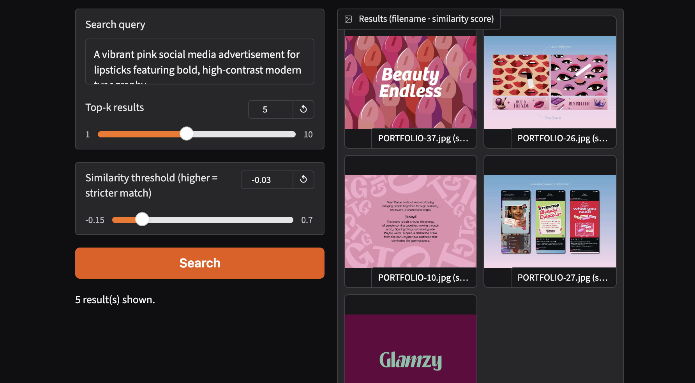
High Semantic Alignment. Explicit color language ("vibrant pink") and functional context ("advertisement") reliably pull in the correct beauty-brand assets (PORTFOLIO-37, -26, -10, -27, plus the Glamzy identity sheet), even though the raw cosine scores here sit under 0.1 — a reminder that "high confidence" for SigLIP looks nothing like CLIP's 0–1 scale.
Case 02 Failure Mode
"A minimalist flat vector illustration of a lipstick tube against a solid purple background."
Top-k: 5Thresh: 0.07 → 0.02
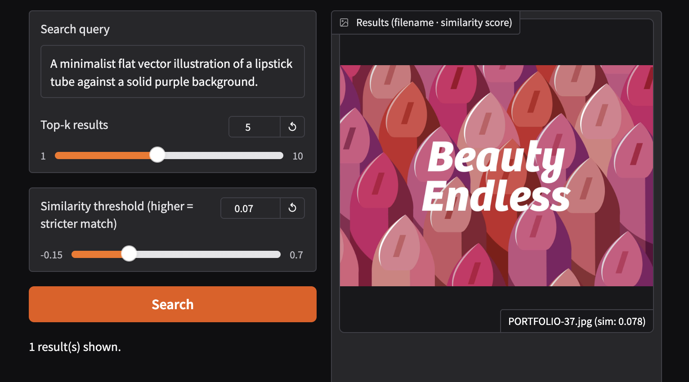
Noun Dominance Bias. At threshold 0.07 only PORTFOLIO-37 clears the bar (sim: 0.078) — the same ornate, saturated lipstick ad from Case 01, not a minimalist flat piece. Dropping the threshold to 0.02 just adds more of the same beauty-branding cluster (PORTFOLIO-26, -24, -39). The model locks onto the object noun "lipstick" and never separates out the contradictory style modifiers "minimalist" or "flat."
Case 03 Success Mode
"Hand-painted Indian truck art with vibrant colors and ornate, heavy-weighted typography."
Top-k: 4Thresh: 0.06
Texture & Saturated Weighting. Top match is a rickshaw/"Need for Speed" illustration (0-03.png, sim: 0.070) — no literal truck art exists in the corpus, but the model still finds the closest thing: heavy-weighted display type over a dense, saturated illustration. It's matching visual grammar, not the literal subject.
Case 04 Failure Mode
"Taylor Swift eating an apple."
Top-k: 2-4Thresh: 0.00 → -0.07
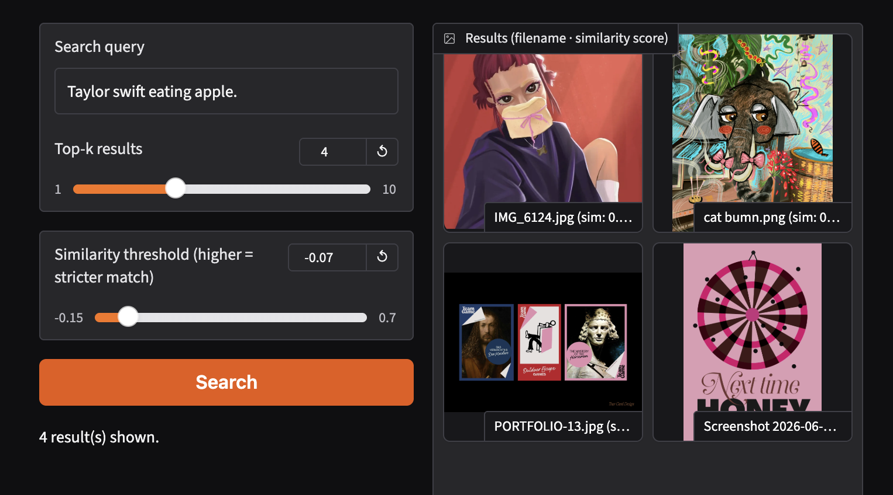
Absolute Subject Absence. At threshold 0.0, only two images clear the bar at all — a self-portrait illustration (sim: 0.011) and an unrelated cat illustration (sim: 0.008). Both scores sit barely above zero, essentially noise. Neither the identity nor the action exists anywhere in the archive, and the model has no graceful way to say "I don't have this" — it just returns whatever is least-dissimilar.
Case 05 Failure Mode
"A blue car."
Top-k: 2-4Thresh: -0.07 → 0.02
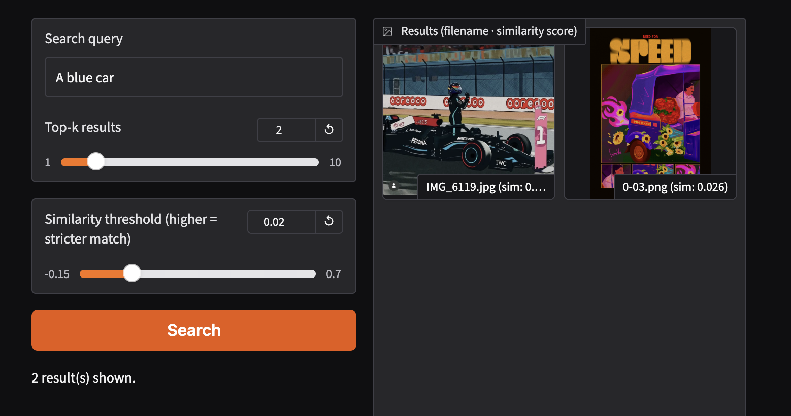
Color-Channel Over-Indexing. The one image in the corpus that actually contains a car (an F1 photo, IMG_6119) does rank first, but a rickshaw illustration (0-03.png, sim: 0.026) ranks second purely on shared blue tones — with no other vehicles in the corpus to disambiguate, hue alone becomes a strong enough signal to nearly tie with an actual car.
Case 06 Failure Mode
"Whimsical white cows falling from the sky like rain into a lush green field."
Top-k: 3Thresh: -0.15
Narrative Composition Collapse. Even at the lowest possible threshold, the top result (sim: 0.008) is a skydiving poster — the model latches onto "falling" as a body-in-motion-through-air concept and ignores the surreal, whimsical framing entirely. Complex narrative composition doesn't survive the embedding.
Case 07 Success Mode
"Shah Rukh Khan performing a dance routine on a neon-lit stage."
Top-k: 3Thresh: 0.03
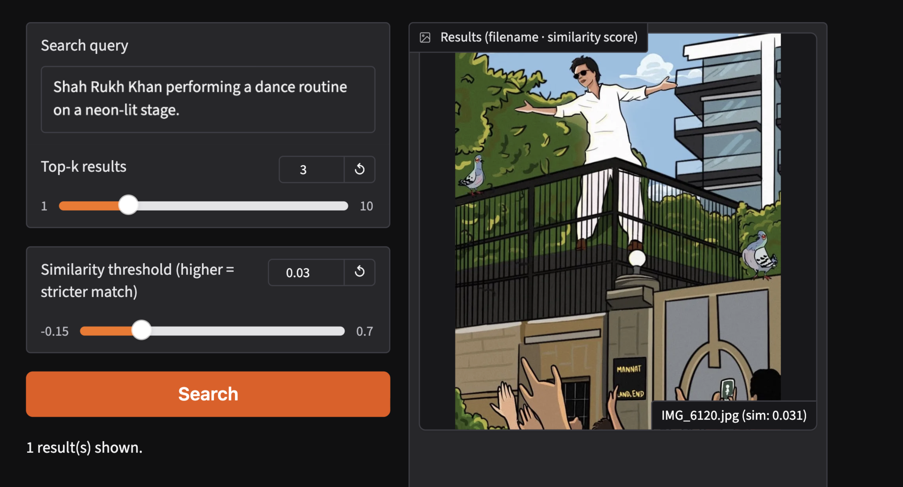
Stylistic Proxy Dominance. Interestingly, the top hit (sim: 0.031) is actually an illustration of a man on a rooftop with arms outstretched — likely drawing on pose and gesture ("performing," open arms) rather than "neon-lit stage," which the corpus doesn't strongly contain. Lacking the specific figure, the model pivots to the nearest available gesture and composition.
Case 08 Success Mode
"A serene morning at a lush tea garden in Munnar featuring rolling green hills and hand-drawn farmers."
Top-k: 3-4Thresh: 0.00 → 0.03
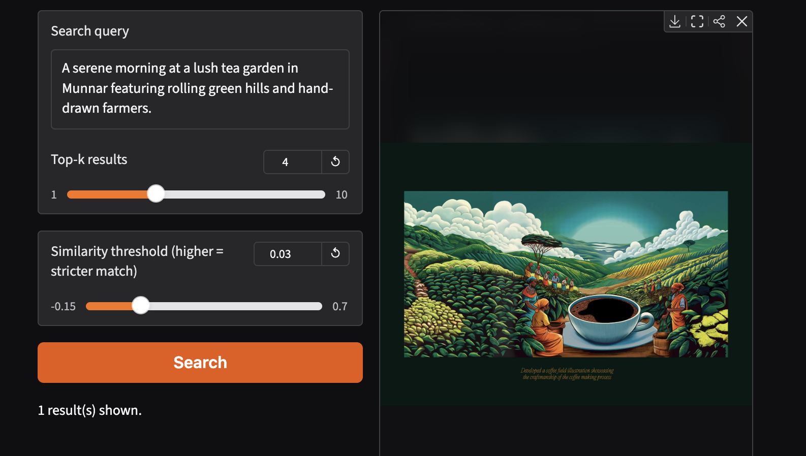
Organic Hue Clustering. A hand-painted coffee/tea field illustration ranks first with real margin over the rest of the set, correctly picking up on rolling green hills and warm, illustrated agricultural scenery — though it's matching on "tea/coffee field" generally rather than the specific place name "Munnar," which the model has no way to ground.
Case 09 Success Mode
"A 1920s Bauhaus-style poster with rigid geometric shapes and a strict primary color palette."
Top-k: 2Thresh: -0.02
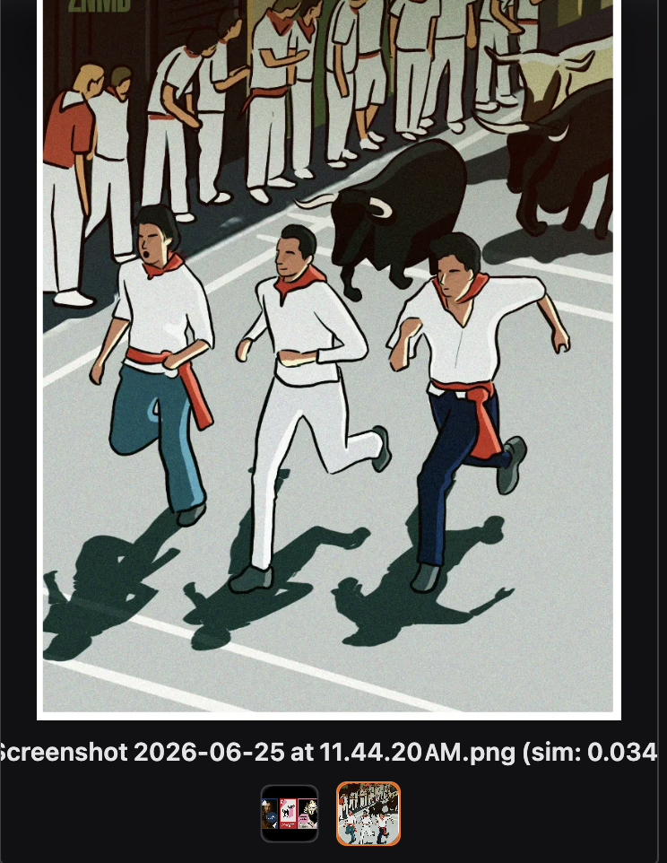
Structural Grid Alignment. Top match (PORTFOLIO-13, sim: 0.046) is a set of rigid, primary-color card layouts — a genuine hit on "geometric" and "primary palette," even though "Bauhaus" and "1920s" as historical/stylistic labels aren't something the model can reason about directly. It's responding to grid structure and color, not art-history vocabulary.
Case 10 Failure Mode
"A surreal dreamscape featuring dozens of watchful blue eyes hidden within a dark, bioluminescent jungle."
Top-k: 4Thresh: 0.07
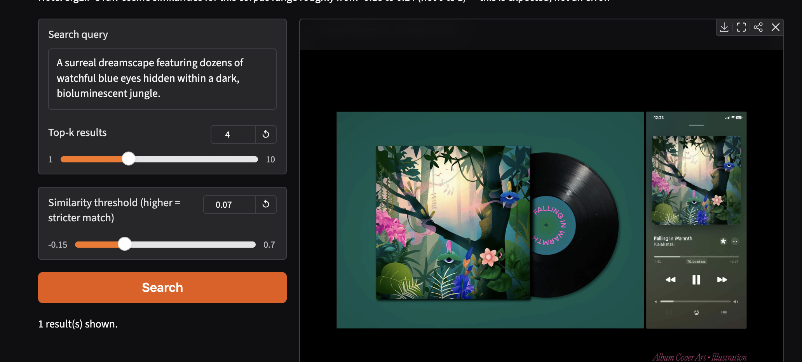
Macro Over Micro Details. The top result is an album-cover illustration of a jungle scene with a single visible eye — a real partial hit on "dark jungle" atmosphere, but "dozens of watchful eyes" as a specific, repeated micro-motif gets flattened into general dark-green-jungle mood. Overall scene color and texture dominate over the fine repeated detail.
Case 11 Failure Mode
"A logo that uses negative space to hide a second image."
Top-k: 4Thresh: 0.08
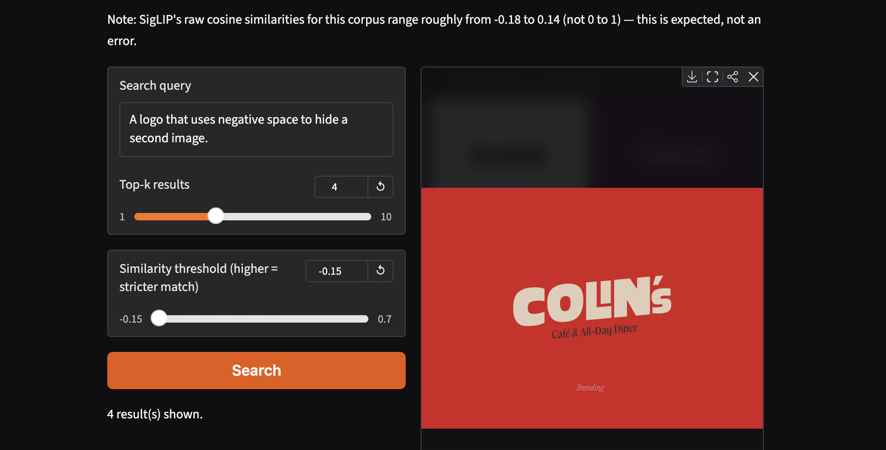
Conceptual Blindness. Top match is the "b/end" wordmark (sim: 0.082), which does contain a literal negative-space cut in the "l" — so this one is arguably a partial success by coincidence. But the model can't actually reason about the concept "hides a second image"; it's responding to the mark's clean, high-contrast geometry, not the visual trick.
Case 12 Success Mode
"Handwritten typography that feels rushed and imperfect."
Top-k: 10Thresh: -0.05
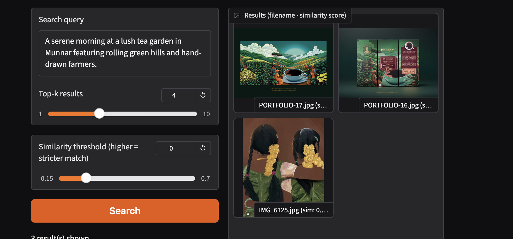
Micro-Texture Sensitivity. Widening top-k to 10 at a permissive threshold surfaces "Friday Mistakes" and other loose brush-lettering pieces alongside cleaner brand type — a real, if noisy, signal for "rushed and imperfect" handwriting texture, distinct from the polished type in Cases 1–2.
Case 13 Failure Mode
"A logo that uses negative space to hide a second image." (repeated)
Top-k: 4Thresh: -0.15
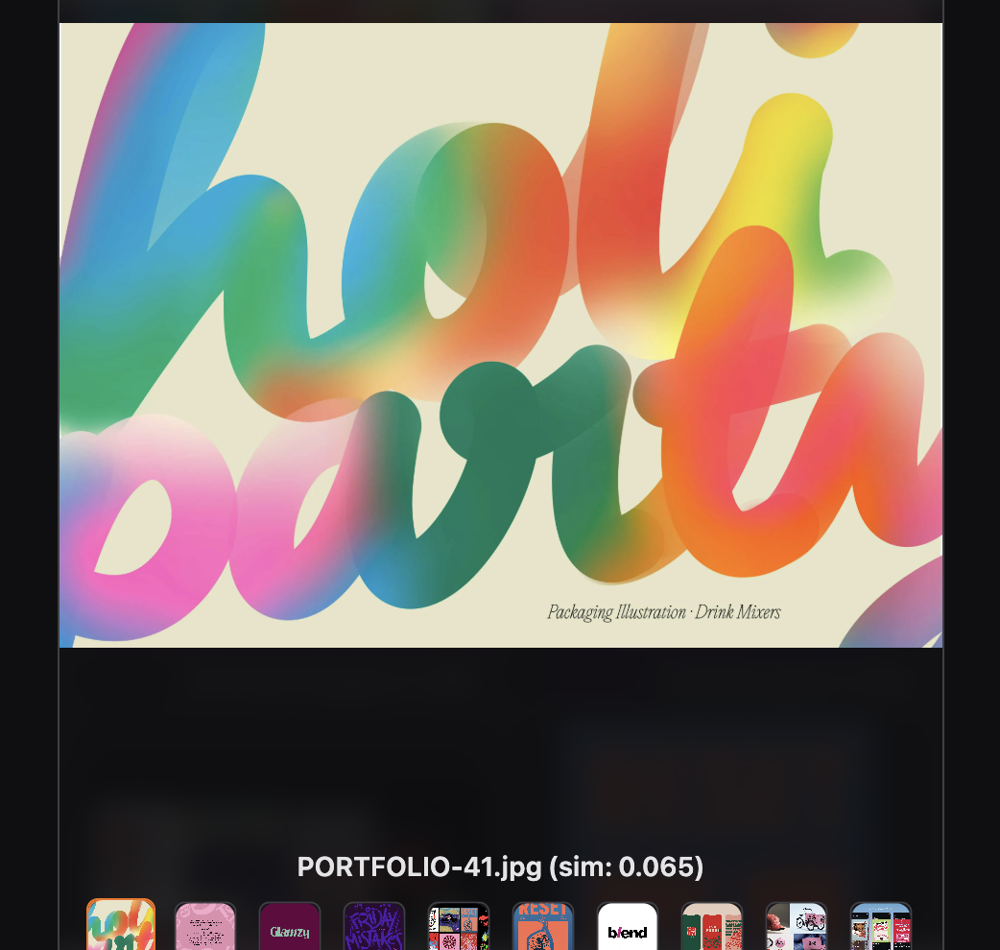
Consistency Validation. Re-running the identical query at a much looser threshold still returns the same small cluster of brand marks (b/end, Glamzy, Reset, Colin's, sim range ~0.04–0.08) in nearly the same order. The conceptual gap in Case 11 is a stable property of the embedding space, not sampling noise — visible directly as two tightly-linked query points in the UMAP plot above.
Critical Systemic Synthesis
Across these 13 runs, the system behaves as a mapper of visual grammar rather than an indexer of objects or concepts. It's strongest when a query's key words are things design actually encodes — color, density, type weight, composition ("vibrant pink," "rigid geometric shapes," "rushed handwriting"). It's weakest exactly where language carries meaning the corpus can't express visually: named public figures, precise place names, narrative causality ("falling"), or high-level visual metaphors like negative space. In those gaps, the model doesn't fail gracefully — it substitutes the nearest available proxy (a shared hue, a similar gesture, a comparable composition) and reports that substitution with the same quiet confidence as a real match.
Project Reflection & Dead Ends
The most useful moment in this project wasn't a success case — it was the threshold bug. My retrieval function was filtering against SigLIP's logit-scaled output instead of raw cosine similarity, which meant my threshold slider had never actually been doing anything the whole time I thought I was tuning it. Fixing it broke the interface in a new way: the Gradio gallery went completely blank, because I was still expecting CLIP-style 0–1 similarity scores, and SigLIP's real range for this corpus turned out to sit closer to −0.18 to 0.14. That forced me to actually run a histogram over the corpus instead of guessing at a "reasonable-sounding" threshold, which is a small methodological habit I'm keeping for future retrieval work.
The atlas cases taught me more about the limits of the model than about my own images. I went in expecting the failures to be embarrassing — and some are, the "negative space logo" query never gets anywhere close to the actual concept, twice. But other failures are more interesting than the successes: "a blue car" nearly retrieving a rickshaw illustration on hue alone tells me more about how SigLIP weights color against form than any of the clean hits do. If I extended this project, the obvious next step is Level 2 — adding captioning so the system can at least articulate why it thinks two things are similar, instead of leaving me to reverse-engineer it from a UMAP plot.
Limitations
Three friction points shape everything above. First, Semantic vs. Literal Resolution: the system consistently prioritizes structural and color layout over conceptual logic, so a query like "falling cows" or "hidden second image" gets matched on spatial/geometric proxies rather than the actual idea. Second, Entity Knowledge Gaps: named figures ("Taylor Swift," "Shah Rukh Khan") and named places ("Munnar") don't exist as concepts SigLIP can ground against this corpus — it pivots to atmosphere or gesture instead of failing gracefully. Third, Out-of-Distribution Sensitivity: for anything absent from the archive (cars, cows, celebrities), similarity scores drop to near-zero or even negative, and the dominant remaining signal is often just color, which can drag in visually unrelated but same-hued assets. A smaller, practical limitation: SigLIP's raw cosine similarity range for this corpus is narrow enough (~0.32 spread) that small numeric differences in the "Thresh" values above correspond to fairly large changes in result count — the slider is sensitive in a way that isn't obvious from the number alone.
Sources & References
• Zhai, X., Mustafa, B., Kolesnikov, A., & Beyer, L. (2023). Sigmoid Loss for Language Image Pre-Training. Proceedings of the IEEE/CVF International Conference on Computer Vision (ICCV). Google DeepMind.
• Radford, A., Kim, J. W., Hallacy, C., Ramesh, A., Goh, G., Agarwal, S., Sastry, G., Askell, A., Mishkin, P., Clark, J., Krueger, G., & Sutskever, I. (2021). Learning Transferable Visual Models From Natural Language Supervision. Proceedings of the 38th International Conference on Machine Learning (ICML). OpenAI.
• McInnes, L., Healy, J., & Melville, J. (2018). UMAP: Uniform Manifold Approximation and Projection for Dimension Reduction. arXiv:1802.03426.
• Abid, A., Abdalla, A., Abid, A., Khan, D., Alfozan, A., & Zou, J. (2019). Gradio: Hassle-Free Sharing and Testing of ML Models in the Wild. arXiv:1906.02569.
• Wolf, T., Debut, L., Sanh, V., Chaumond, J., Delangue, C., Moi, A., et al. (2020). Transformers: State-of-the-Art Natural Language Processing. Proceedings of EMNLP: System Demonstrations. Hugging Face.
• Manning, C. D., Raghavan, P., & Schütze, H. (2008). Introduction to Information Retrieval (Ch. 6: Scoring, Term Weighting, and the Vector Space Model). Cambridge University Press.